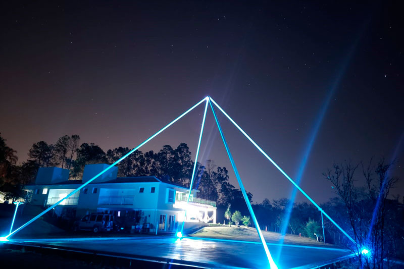

Nascido em 30 de julho de 1955, se tornou professor, escritor, físico, músico,
cantor, ufólogo, esotérico, espiritualista, médium, terapeuta, filantropo, e locutor brasileiro.

Atualmente, Laércio Benedito Fonseca trabalha em seu Ashram na cidade de Limeira-SP.
Médium e sensitivo, o que permitiu agregar grande conhecimento acerca do mundo espiritual e como as leis cósmicas regem nossas vidas e o universo.
Professor de Tai Chi Chuan, Kung Fu, Yoga, Filosofias Orientais e Medicina Chinesa.
Vegetariano há mais de 30 anos.
Cria dezenas de cães e gatos encontrados abandonados nas ruas.
Autor de mais de 700 palestras em vídeo conferências editadas em dvds, nas áreas de psicologia esotérica e interior, alimentação natural, transição planetária, ufologia esotérica e casuística, dos maias, de terapias espirituais e holísticas, de filosofia interior, de práticas chinesas, de projeção astral, de tantra, de temas espirituais e espíritas, e com um total de 10 livros publicados.
Atualmente vem fazendo uma ponte entre ciência e espiritualidade com seu amplo trabalho sobre Física Quântica e Espiritualidade e o Projeto Terra , com suas idéias pretende validar a existência do espírito e dos fenômenos mediúnicos, espirituais e ufológicos.[3] Dirige há mais de 50 anos a escola de treinamento interior, Academia Wu San Dji Tao, e após todos esses anos de trabalhos, desenvolve um projeto de treinamento interior, e de seminários e cursos em Limeira.
O desenvolvimento do Projeto Terra, carro chefe dos trabalhos do professor, foi resultado de anos de contato com os grandes mestres da luz e com os seres extraterrestres através de sua mediunidade.
Maiores informações na
Wikipedia ou no seu website
Caminho da Luz